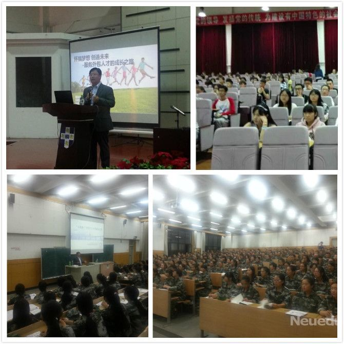

 9月16日下午，东软控股副总裁、东软睿道教育公司总裁李印杲老师相继来到黑龙江外国语学院和哈尔滨学院， 分别向两个高校的学子们分享了“怀揣梦想 创造未来—服务外包人才的成长之路”以及“互联网+时代IT人才的成长之路”的主题演讲。
演讲开始，李印杲总裁指出随着“互联网+”时代的来临，信息技术进一步推动服务外包需求变革， 以大数据、物联网、移动互联网、云计算为代表的新一代信息技术正在加速与传统产业融合发展， 基于信息化、互联化的新兴商业模式正在重新构建。 接下来，李印杲总裁提出IT及服务外包产业具有知识性、专业性、实践性的特点，决定了该产业必然是智力型、应用型人才云集之地； 产业国际化亟需兼备技术和语言能力并能够跨文化沟通的人才。 近年国内毕业生数量持续快速增长，面临着就业愈加困难的窘迫，同时企业和高校也陷入了人才需求和人才输出的“囚徒困境”中。 面对严峻的就业现实，李印杲总裁着重给出了对大学生的建议：“不断提升自己的软技能和硬技能，做好职业生涯规划，从现在开始职涯历程的起点； 聚焦IT方向，打好基础，积累相应的工作经验，为就业做好充分准备。”